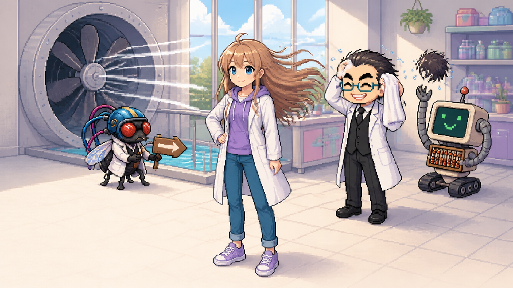
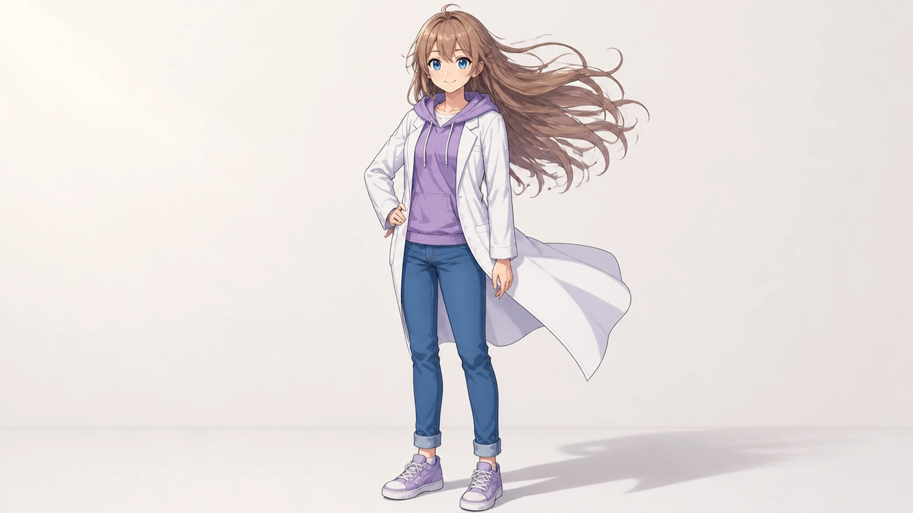
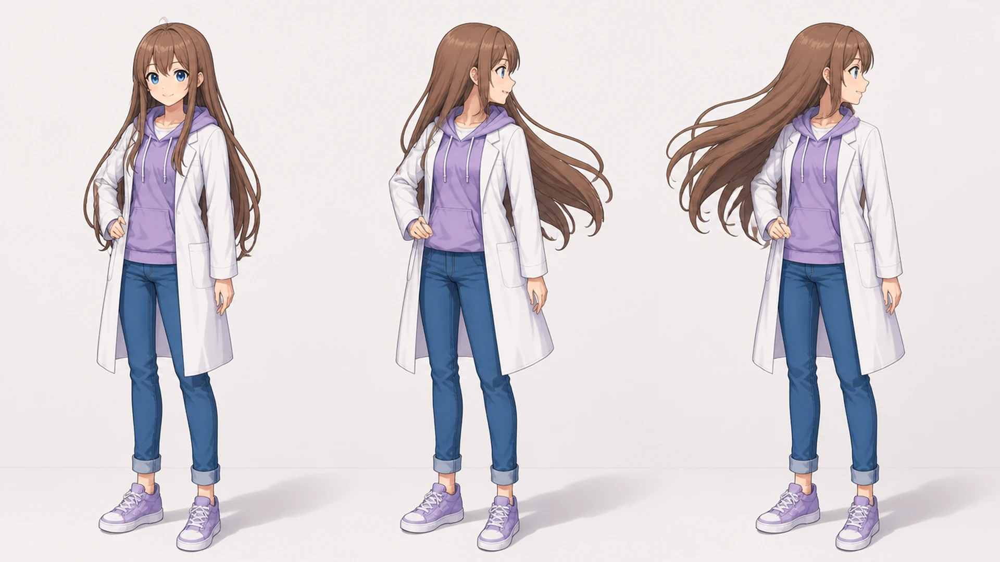
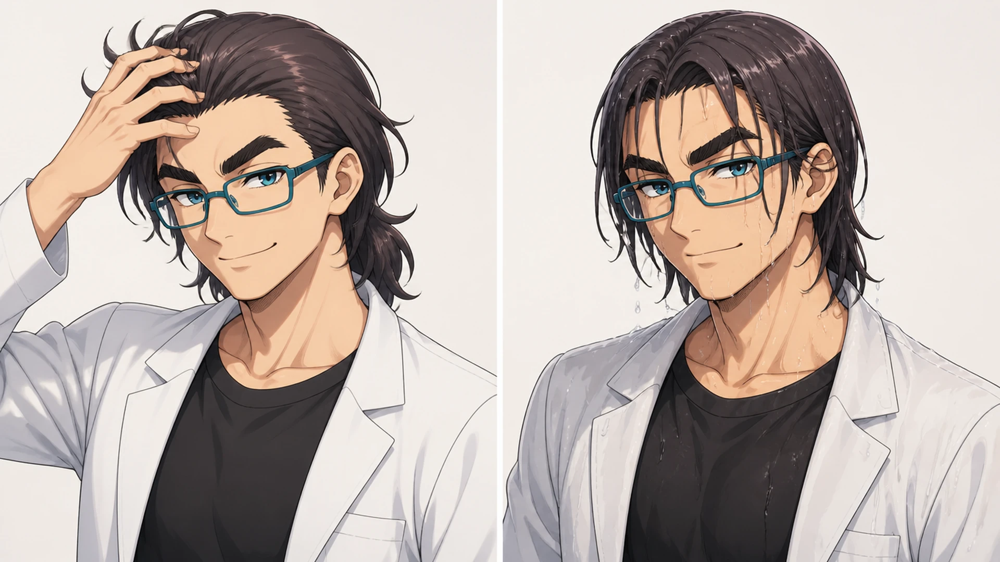
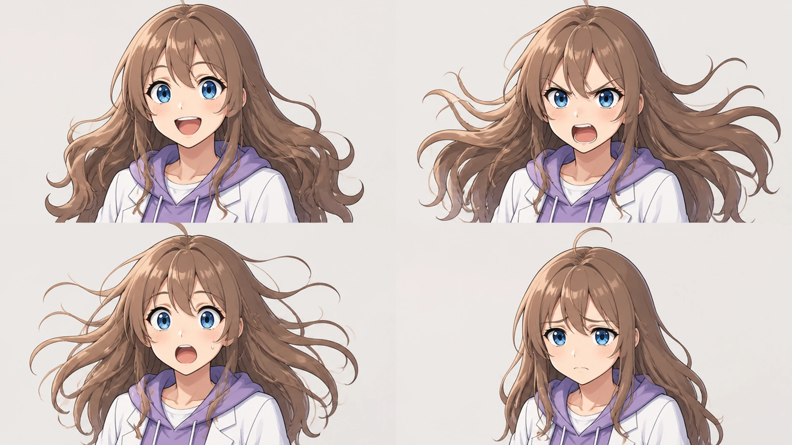
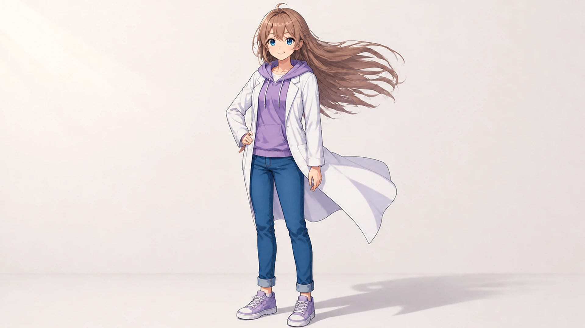
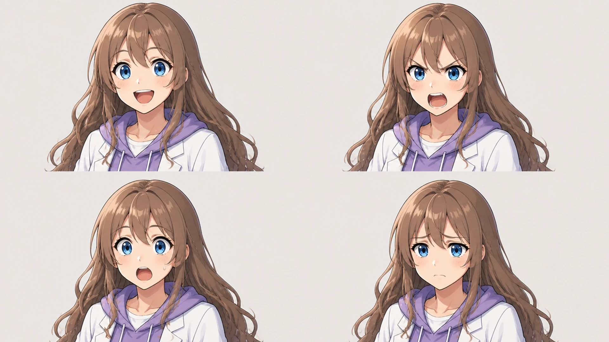
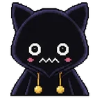

오늘의 과제

박사하루가 긴 웨이브 가발을 쓰고 선풍기 앞에 섰다. 머리카락이 어떻게 날릴까?

주판봇간단합니다! 머리 전체를 통째로 30° 기울이면 됩니다!

초파리 연구원통째로 기울이면 머리가 딱딱한 판이 돼. 뿌리는 붙어 있고 끝이 많이 움직이지.

조수 하루가발이 날아가지만 않으면 좋겠어요…

모델은 하루입니다. 이번에는 허리까지 오는 긴 웨이브 가발을 쓰고 선풍기 앞에 섭니다. 박사는 앞머리를 쓸어 올리고, 물에 젖은 머리를 보여 줍니다. 주판봇은 머리카락을 한꺼번에 기울이고, 초파리는 뿌리에서 끝까지 차례로 움직입니다.
그림 실력·코드·수식을 몰라도 됩니다. 실험을 눌러 보며 따라오세요.
옆머리·뒷머리뿐 아니라 앞머리 같은 작은 다발도 같은 방향으로 날리고, 끝을 안쪽으로 모으면 부드러워 보입니다

학교 수학으로 보면 — 제곱 — 같은 수를 두 번 곱합니다. 2배는 4배, 3배는 9배가 됩니다.
| 식 조각 | 뜻 |
|---|---|
| 풍속 | 바람의 빠르기 |
| ² | 제곱. 조금만 빨라져도 힘이 크게 늘어남 |
| ∝ | 비례. 다른 값(머리카락 넓이 등)이 같을 때 |

자전거를 천천히 탈 때와 빨리 탈 때, 얼굴에 닿는 바람 힘은 생각보다 훨씬 크게 차이 납니다.
애니메이션에서는 바람 장면의 '바람 방향 화살표'를 원화 구석에 그려 두고 모든 머리카락과 옷을 그 방향에 맞춥니다. 센 바람에는 앞머리를 거꾸로 세우고 뒷머리를 뒤로 흘립니다. 3D에서는 바람 세기·방향 값을 장면 하나에 하나만 둡니다.


바람 세기가 커질수록 끝 이동이 빠르게 늘어납니다. 뿌리 쪽은 거의 그대로이고 끝이 가장 많이 움직입니다.
뻣뻣함을 올리면 같은 바람에서도 덜 휘어 짧은 머리·굵은 머리처럼, 낮추면 가는 머리처럼 크게 휩니다.
앞머리만 반대 방향으로 두면 바람이 두 개 부는 것처럼 보입니다. 6부 f6이 이 실수입니다.

AI 그림에서 뒷머리는 오른쪽으로, 앞머리는 왼쪽으로 날립니다. 그대로 써도 될까요?
바람 방향이 하나가 아닙니다. 'strong wind from the left, all hair including the bangs blows to the right'처럼 방향 하나와 앞머리까지 적습니다.
몸이나 머리가 움직이면 뿌리부터 차례로 움직임이 전해져, 몸에서 먼 털끝일수록 늦게 따라옵니다
학교 수학으로 보면 — 속력 = 거리 ÷ 시간을 거꾸로 씁니다. 시간 = 거리 ÷ 속력입니다.
| 식 조각 | 뜻 |
|---|---|
| 뿌리에서 떨어진 거리 | 두피에서 털끝까지 길이 |
| 전달 빠르기 | 움직임이 머리카락을 타고 퍼지는 빠르기(예시 150cm/초) |
| × 24 | 1초 24장 애니메이션의 장 수로 바꾸기 |
머리를 묶고 고개를 휙 돌리면, 포니테일 끝이 늦게 따라와 반대쪽 볼을 칩니다.
애니메이션에서는 이를 '늦게 따라오기(팔로 스루)'라고 부르며, 원화에서 머리카락 끝을 몸보다 몇 장 늦게 두고 중간 그림을 넣습니다. 춤추는 장면에서는 몸 가까운 머리는 몸 방향을 따르고, 끝은 힘이 흩어져 둥글게 말립니다.
머리카락이 길수록 끝이 늦게 출발하고, 고개가 멈춘 뒤에도 더 오래 흔들립니다.
'같이 돌기'를 켜면 머리카락이 머리와 한 덩어리로 돌아 딱딱해 보입니다. 늦게 따라오는 장면이 움직임의 힘을 보여 줍니다.
작업에서는 늦는 장 수를 미리 계산해 털끝을 몸보다 그만큼 늦게 그리고, 멈춘 뒤 끝이 한 번 더 넘어갔다 돌아오게 합니다.

AI로 만든 춤추는 장면 연속 그림에서 머리카락이 매 장 몸과 같은 각도입니다. 문제일까요?
늦게 따라오기가 빠졌습니다. 'the hair lags behind the turn, the tips swing outward and curl'처럼 끝이 늦는 모습을 적고, 연속 그림이면 장마다 끝 위치를 확인합니다.
손으로 쓸어 올리면 손가락 사이로 털이 튀어나오고, 젖으면 작은 다발로 갈라져 처지며, 물속에서는 사방으로 퍼집니다
머리를 쓸어 올리면 손가락 사이로 털이 삐져나오고, 손을 떼면 천천히 다시 내려옵니다.
젖은 머리는 다발 수를 늘리고(작은 다발이 많아짐), 부피를 줄이고, 끝을 뾰족하게 그립니다. 물방울이 떨어지는 끝을 그리면 더 잘 읽힙니다. 물속 머리는 진행 방향과 물살 방향에 따라 퍼지는 쪽이 바뀌고, 거품을 함께 그리면 물속임이 바로 보입니다.

이 실험의 젖은 머리는 마른 머리보다 다발 수 2배, 부피 0.6배, 무게 1.3배로 둔 예시입니다. 다발이 가늘고 많아지며 처집니다.
손으로 쓸어 올리면 손이 닿는 곳에서 털이 위로 꺾이고, 손가락 사이 빈 곳으로 가는 털이 튀어나옵니다.
물속에서는 아래로 처지지 않고 사방으로 퍼집니다. 짧은 머리도 털끝이 모든 방향으로 부풀어 오릅니다.

'wet hair'를 넣었는데 머리 위에 물방울만 몇 개 붙고 머리 모양은 뽀송합니다. 무엇이 빠졌나요?
젖은 머리의 모양이 빠졌습니다. 'soaking wet hair, flattened, separated into many thin clumps that cling to the neck, water dripping from the tips'처럼 부피·다발·처짐을 적습니다.
기쁨은 부드럽게 퍼지고, 분노는 아래에서 위로 곤두서고, 놀람은 털이 튀고, 실망은 끝이 축 처집니다
'머리끝까지 화가 났다', '머리털이 곤두섰다'처럼 우리말에도 감정과 머리카락을 잇는 표현이 많습니다.
만화에서는 기쁨에 머리를 좌우로 튀게 하고 작은 다발을 여러 개 그려 들뜬 기분을 보여 줍니다. 분노가 가장 크면 머리 전체가 불꽃처럼 솟습니다. 실망은 털끝을 아래로 향하게 하고, 정수리에 튀어나온 한 가닥(바보털)을 축 늘어뜨리면 쉽게 읽힙니다.
기쁨은 전체가 둥글게 살짝 부풀고, 분노는 머리 아래쪽부터 위로 들려 크게 흩어지며, 놀람은 가는 털이 사방으로 튑니다.
실망은 모든 털끝이 아래를 향하고 부피가 줄어듭니다. 튀어나온 한 가닥을 늘어뜨리면 멀리서도 읽힙니다.
과장 정도는 화풍에 맞춥니다. 실사풍에 가까울수록 작게, 단순한 만화풍일수록 크게 씁니다(5부 4단계).

'angry'만 넣었더니 표정은 화났는데 머리카락은 얌전합니다. 머리로도 화를 보이고 싶다면?
'her hair bristles and rises from the nape upward in anger, manga-style exaggeration'처럼 머리카락의 움직임을 적습니다. 과장이 너무 크면 화풍과 어긋나니 세기도 함께 적습니다.
이 부에서 배운 원리를 그림 생성 AI(Genspark 등)로 직접 확인합니다. A는 이 페이지 그림을 실제로 만든 프롬프트, B는 원리를 하나 빼거나 바꾼 비교용 문장입니다.
참고 그림 내려받기: haru_anime_base · sia_anime_base · moa_anime_base · haru_sheet · sia_sheet · moa_sheet · doctor_sheet · fruitfly_sprites_6 · jupanbot_ref_genspark_v0 · pixel_style_ref_prev_cover
바람 방향 하나에 모든 다발이 맞는지 실제 그림으로 봅니다.
첨부: refs/haru_anime_base.png, refs/doctor_sheet.png
Illustration, wide 16:9. Art style: high-quality anime illustration, clean confident lineart, two-tone cel shading, natural adult proportions. Match the attached reference images exactly (face, hair, colors, accessories). All characters are adults in their early twenties (the Professor is an adult man in his thirties, normal proportions, not chibi); modest outfits exactly as described. Full body of Haru (adult lab assistant in her early twenties, big bright blue eyes) wearing a wig: a waist-length soft wavy light-brown wig; she keeps her own face, big bright blue eyes and outfit; the wig completely covers her usual pink hair, buns and navy streaks, wearing lavender hoodie with white drawstrings over a white t-shirt, open white knee-length lab coat, rolled-up jeans, lavender sneakers, standing in a strong wind blowing from the left. All the hair, including the bangs and side locks, blows to the right; the roots stay close to the head and the tips move the most, gathering softly inward. Her lab coat also flutters to the right. Light from the upper left. Plain off-white studio background or a bright clean lab interior. No text, no letters, no numbers, no speech bubbles, no logos, no watermark, no revealing clothing, not childlike, no school uniform, not resembling any famous anime character.
Same image. Change only: only the long back hair blows to the right; the bangs stay still or fall to the left. Keep the same framing. Still no text.

실제 결과: A는 뒷머리와 랩코트가 오른쪽으로 날리고, 앞머리는 살짝만 오른쪽으로 쏠렸습니다. B는 앞머리가 그대로 내려오고 뒷머리만 날립니다. 차이는 작습니다. 바람이 둘처럼 보이는 모습은 6부 f6 그림에서 또렷합니다.
같은 가발로 기쁨·분노·놀람·실망을 연기할 때 머리카락도 함께 연기하는지 봅니다.
첨부: refs/haru_anime_base.png, refs/doctor_sheet.png
Illustration, wide 16:9. Art style: high-quality anime illustration, clean confident lineart, two-tone cel shading, natural adult proportions. Match the attached reference images exactly (face, hair, colors, accessories). All characters are adults in their early twenties (the Professor is an adult man in his thirties, normal proportions, not chibi); modest outfits exactly as described. Four panels of Haru (adult lab assistant in her early twenties, big bright blue eyes) wearing a wig: a waist-length soft wavy light-brown wig; she keeps her own face, big bright blue eyes and outfit; the wig completely covers her usual pink hair, buns and navy streaks, wearing lavender hoodie with white drawstrings over a white t-shirt, open white knee-length lab coat, rolled-up jeans, lavender sneakers, head and shoulders, manga-style exaggeration. 1) joy: hair puffs out lightly and bounces; 2) anger: hair rises from the nape upward and spreads; 3) surprise: thin strands spring out in all directions; 4) disappointment: all tips droop downward and one single strand on top hangs limply. Same light from the upper left in all panels. Plain off-white studio background or a bright clean lab interior. No text, no letters, no numbers, no speech bubbles, no logos, no watermark, no revealing clothing, not childlike, no school uniform, not resembling any famous anime character.
Same image. Change only: keep the facial expressions, but the hair stays exactly the same calm shape in all four panels. Keep the same framing. Still no text.

실제 결과: A는 분노 컷에서 머리가 위로 퍼지고, 놀람 컷에서 털이 튀고, 실망 컷에서 끝이 처졌습니다. B는 네 컷 모두 같은 머리라 감정이 얼굴에만 남아 약해 보입니다.

| 항목 | 주판봇 | 초파리 |
|---|---|---|
| 닮음(하루로 알아보나) | 7 | 8 |
| 원리(바람 하나·늦게 따라옴·무게) | 4 | 9 |
| 자연스러움(움직임의 힘) | 5 | 9 |
| 합계 | 16 | 26 |





점수는 이야기 속 예시입니다. 실제 그림을 평가한 값이 아닙니다.
| 주제 | 한 줄 | 작업에서는 |
|---|---|---|
| 바람 | 미는 힘 ∝ 풍속² | 방향 하나, 앞머리까지 |
| 늦게 따라옴 | 늦는 장 수 = 거리 ÷ 빠르기 × 24 | 끝을 몸보다 늦게 |
| 손과 물 | 닿는 곳·무게·부피가 바뀜 | 젖으면 다발↑ 부피↓ |
| 감정 | 기쁨 퍼짐·분노 곤두섬·놀람 튐·실망 처짐 | 과장 세기는 화풍에 맞게 |

이 페이지에 나온 개념·방법·비유·쓰임을 모았습니다. 검색하고, "설명 보러 가기"로 본문에 돌아갑니다.
지식 색인을 출처와 함께 파일로 내려받습니다. 서지 관리는 BibTeX·RIS, 온톨로지 편집은 Turtle, 그래프 도구는 CSV, 여러 페이지 합치기는 kg.json입니다.